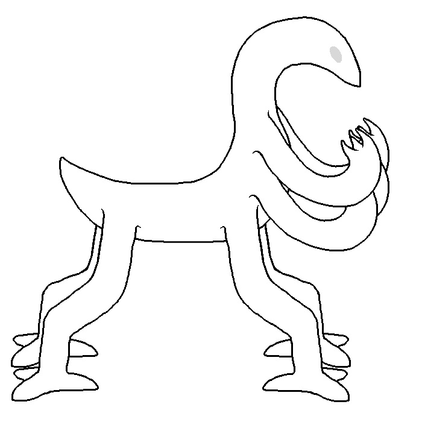
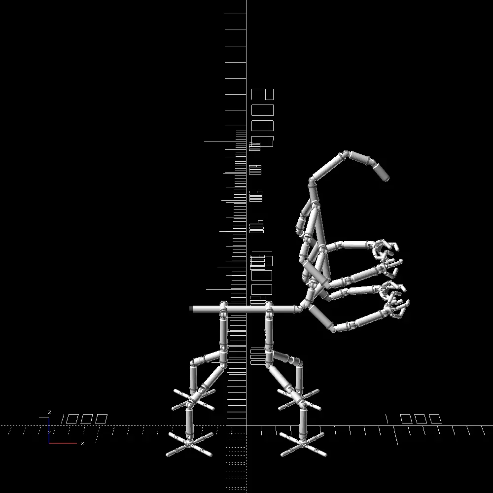

| Light drone body characteristics | |
|---|---|
| Battery capacity: | 20MJ |
| Mass: | 150kg |
| Rated carrying capacity: | 1280N |
| Peak momentary carrying capacity: | 3824N |


| Social drone body characteristics | |
|---|---|
| Battery capacity: | ? |
| Fuel capacity: | ?L = ?MJ |
| Fuel type: | Ethanol |
| Mass: | ? |
| Rated carrying capacity: | ? |
| Peak momentary carrying capacity: | ? |